.jpg) 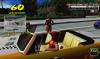
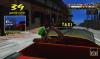
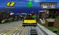
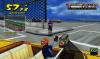
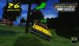
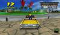
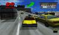
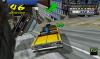
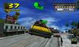
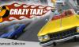
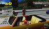
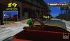
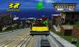
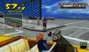
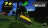
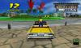
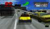
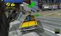
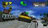
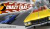
اللعبة المعروفة منذ عام 2000 والتي أطلقت لأول مرة لجهاز الألعاب آنذاك دريم كاست, نالت اعجاب الكثير لروعتها وهي تابعة لشركة سيجا المشهورة, صدرت نسخة منذ سنتين لأنظمة الأجهزة المحمولة الذكية واللوحية كالآي أو إس والأندرويد, هي ليست أقل متعة من الأصلية وهي تعمل بكفاءة عالية. في لعبة Crazy Taxi على اللاعب السيطرة على سائق التاكسي أو الأجرة في واحدة من مدينتين مستوحاة من ولاية سان فرانسيسكو الأمريكية, الهدف من اللعب هو التقاط ونقل الركاب من مكان الى آخر في أسرع وقت ممكن, بشرط تجاهل قوانين المرور الغير مجدية بحسب نظام اللعبة.
هناك أنواع مختلفة من الركاب أو الزبائن تشمل ألوان على الرأس والتي تمثل المدة المستغرقة للوصول الى المكان المحدد, وفي نفس الوقت كل لون يشير الى سعر خاص. كذلك سيكون لدى السائق جهاز توقيت يخص كل توصيل إن انتهى هذا التوقيت فلن يحصل السائق على أجرته, هذا ويوجد التوقيت الشامل أو الكلي لجميع التوصيلات, إن انتهى فهي الخسارة بالنسبة للاعب, لهذا السبب كل شئ عن هذه اللعبة هي السرعة. أسلوب اللعبة وجولاتها ملائمة جدا للأجهزة النقالة, لأن كل جولة لا تأخذ سوى بضعة دقائق لاستكمالها, إنها ميكانيكية تحافظ على انفعال اللاعب والعودة الى اللعبة في كل مرة. الوقود/الفرامل وعناصر التقدم الى الأمام والخلف تم دمجها باتقان وسلاسة بحيث تكون النتيجة ضوابط سهلة التحكم لتقديم المزيد من المناورات المتقدمة. جميعها مناسبة للشاشات التي تعمل بتقنية اللمس وهي ذات استجابة عالية تعمل بأزرار التحكم الظاهرة على الشركة, هذا وإن الشركة تتيح أيضا التحكم بتقنية الإمالة والتي ليست أقل متعة وكفاءة. بالنسبة لما بين موضع الركوب لموضع انزال الزبون فهي مسافة يجب على اللاعب الجنون بها, أي كل شئ متاح ولا داعي للقلق إزاء الأضرار, لأن المركبة الخاصة بك لا تتضرر أبدا مهما حصل, بمجرد ركوب الزبون عليك العمل مثل الطلقة أو الصاروخ المستعجل لانهاء المهمة بأسرع ما يمكن ولكن بشرط واحد أن لا تقوم بدهس المشاة على الطريق, تتيح اللعبة قطع الحدائق على الطرق, اجتياز السيارات الأخرى على الشارع وكسر جميع قوانين المرور التي يمكن تصورها. يمكن أيضا للاعب زيادة الدخل عن طريق تقديم الأعمال البهلوانية والحركات الخطيرة المثيرة في جميع انحاء المدينة وذلك عن طريق سحق الأشياء وتحطيمها حتى أيضا في بعض الأحيان الاصطدام بالمباني لكسب النقود, التحركات المتاحة هي التوقف المفاجئ, الدوران 180 درجة والتي هي مفيدة جدا, بالاضافة الى جهاز التسريع ودفع المركبة لسرعات عالية. هناك 4 سائقي أجرة يمكن الاختيار من بينها. لأولئك الذين يريدون بعض التحديات الاضافية فهناك ما يسمى بطور الجنون (crazy box) والذي يحتوي على المزيد من المراحل الاضافية مع المزيد من الأهداف.
انها لعبة ممتعة وشيقة تذكرنا بكلاسيكيات ألعاب الفيديو لتكون شبه حنين الى الماضي لأنها تشمل نفس الرسومات والأسلوب من الأصلية مع اختلاف بسيط في بعض الخرائط, هي لعبة تستحق التدقيق في نسختها المحمولة على الرغم من التحدي الكبير. بالنسبة للموسيقى فالأغاني في اللعبة متكررة بعض الشئ ولكن تتيح الشركة للاعبين تشغيل مفضلتهم من ملفات الموسيقى المرفقة في أجهزتهم. اللعبة الآن مجانية على جوجل بلاي وعلى أبستور فسارع التحميل قبل تاريخ 19 من الشهر الجاري ووفر الخمس دولارات لجيبك.
متوسط التقيمات:
يرجى تسجيل الدخول أو التسجيل لتتمكن من ترك تعليق
للاسف لا يوجد تعليقات جديد , عدا لاحقا.
النضام : Windows® XP
المعالج : 3.0 GHz Intel Pentium 4
الرام : 2GB
كرت الشاشة : DirectX 9.0c compatible, NVIDIA GeForce 7300, ATI Radeon™ X1600 Video Card avec 256Mo RAM
كرت الصوت : Carte son compatible DirectX 9.0c
القرص الصلب : 240MB
النضام : Windows® 7
المعالج : 2.0 GHz Intel Core 2 Duo
الرام : 2Go RAM ou plus
كرت الشاشة : compatible DirectX
9.0c/Shader3.0, NVIDIA GeForce 8800 ou supérieure, ATI Radeon™ X1900 Video Card avec 512Mo RAM
كرت الصوت : Carte son compatible DirectX 9.0c
القرص الصلب : 4 Go d'espace disque
يحتاج DirectX® : DirectX 9.0c أو أحدث